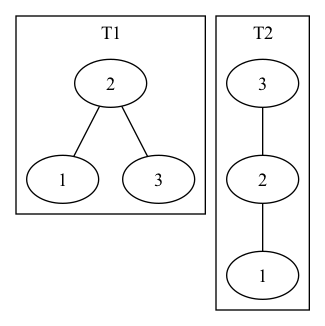

Chapter 13.2
13.2
13.2-1
RIGHT-ROTATE(T, y)
x = y.left
y.left = x.right
if x.right != T.nil
x.right.p = y
x.p = y.p
if y.p == T.nil
T.root = x
else if y = y.p.left
y.p.left = x
else y.p.right = x
x.right = y
y.p = x
13.2-2
Each two adjacent nodes generates a unique rotation, thus the number of the possible rotations is the number of edges in the tree, for an \(n\)-node binary search tree, the number is \(n - 1\).
13.2-3
After the left rotation, we have increased the depth of \(a\) by \(1\), we have not changed the depth of \(b\), and we have decreased the depth of \(c\) by \(1\).
13.2-4
Consider transforming an \(n\)-node binary search tree into a right-going
chain, let the root and all its successive right children be the initial
chain, then we could say all the other nodes are on the left side of the
chain, denote a node in the chain as \(y\) and its left child as \(x\), we
could perform RIGHT-ROTATE on \(y\) to add \(x\) to the chain. Thus, at
most \(n - 1\) right rotations suffice to transform the tree into a
right-going chain. Since the rotations are reversible, we could transform any
arbitrary \(n\)-node binary search tree into a right-going chain using at
most \(n - 1\) right rotations, then transform the right-going chain into any
other arbitrary \(n\)-node binary search tree using at most \(n - 1\)
left rotations.
13.2-5
Below is the example of two trees \(T_1\) and \(T_2\) such that \(T_1\) cannot be right-converted to \(T_2\).

We define the left depth of node \(x\) in a binary search tree \(T\), as the number of left edges in the simple path from the root to \(x\), and the total left depths of a binary search tree \(T\) as the sum of the left depths of all the nodes in \(T\). We know that for an \(n\)-node binary search tree \(T\), the left depth of a single node in \(T\) is \(O(n)\), and the total left depths of \(T\) is \(O(n^2)\).
Consider of Figure 13.2, after the right rotation on \(y\), we have decreased
the left depths of \(x\) and the nodes in \(\alpha\) by \(1\), and we have
not changed the left depths of other nodes, thus we have decreased the total
left depths of \(T\) is \(|\alpha| + 1\). Hence, after at most \(O(n^2)\)
calls to RIGHT-ROTATE, then we have decreased total left depths of \(T\)
into \(0\) and we could not perform more RIGHT-ROTATE. Therefore, if a tree
\(T_1\) can be right-converted to \(T_2\), it can be right-converted using
\(O(n^2)\) calls to RIGHT-ROTATE.